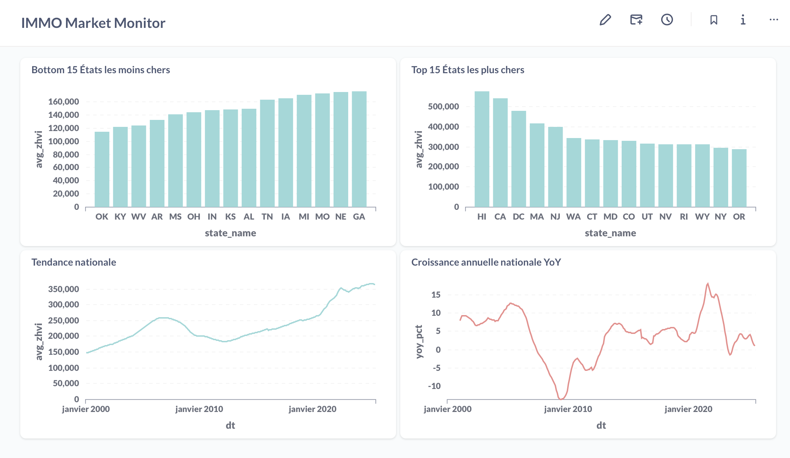

Extraction
Lecture du CSV et validation du schéma.
Étude de cas · projet antérieur
Un pipeline Zillow ZHVI → PostgreSQL conçu pour être relancé sans risque et servir au pilotage, avant la plateforme Immo Insights N°06.

Architecture
Lecture du CSV et validation du schéma.
Format large → long, variations mensuelles et annuelles, nettoyage.
Upsert des régions puis des prix mensuels.
Tableaux de bord Metabase de comparaison.
Décisions techniques
(region_id, dt).ON CONFLICT DO UPDATE.1SELECT dt, AVG(zhvi) AS avg_zhvi 2FROM prices_monthly 3GROUP BY dt 4ORDER BY dt;